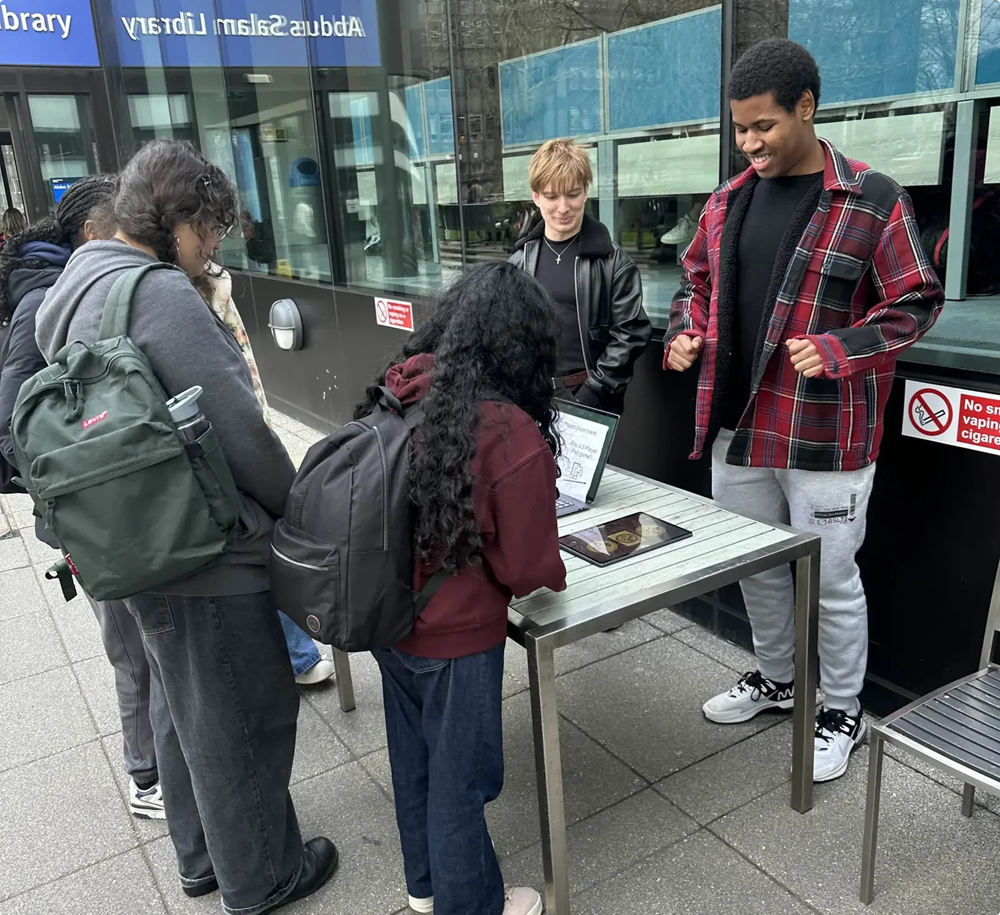
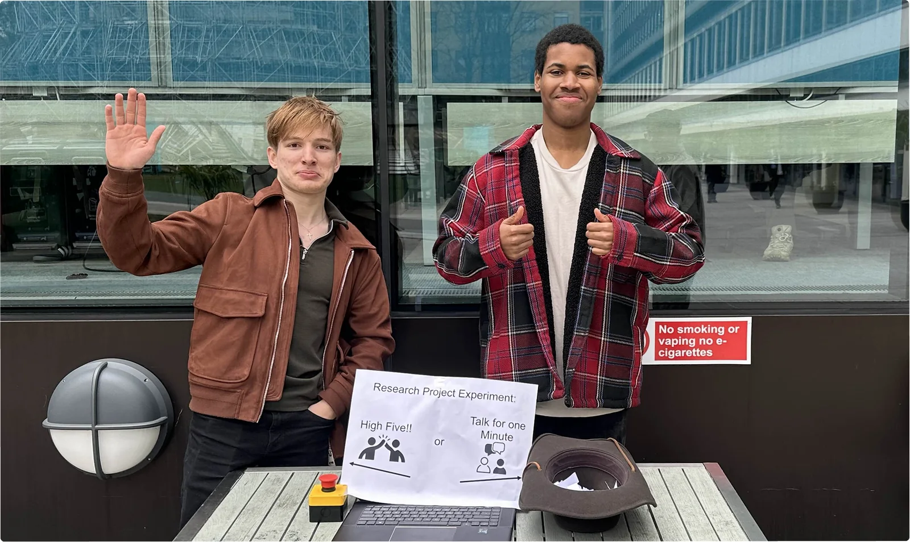
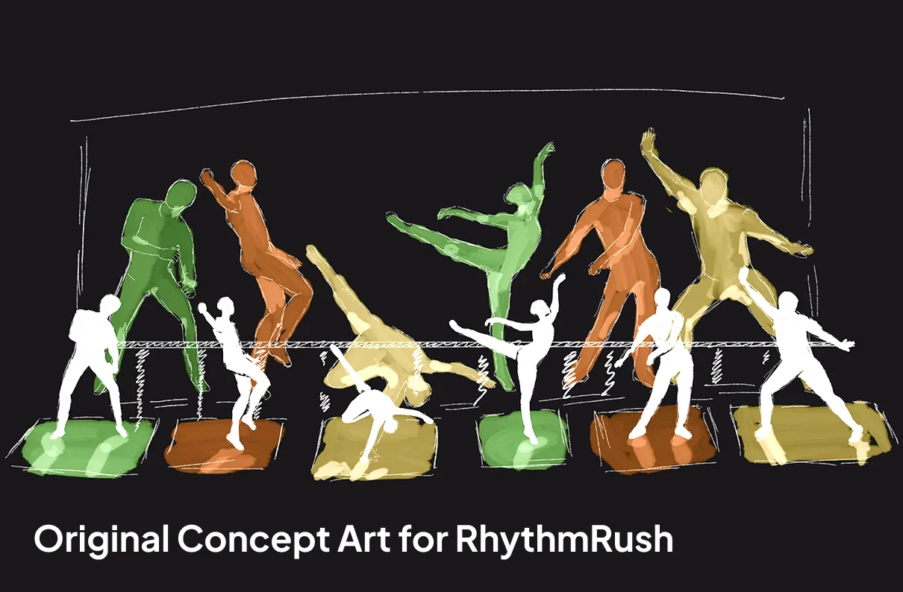
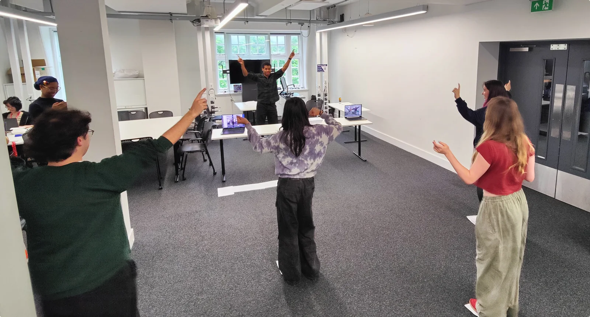
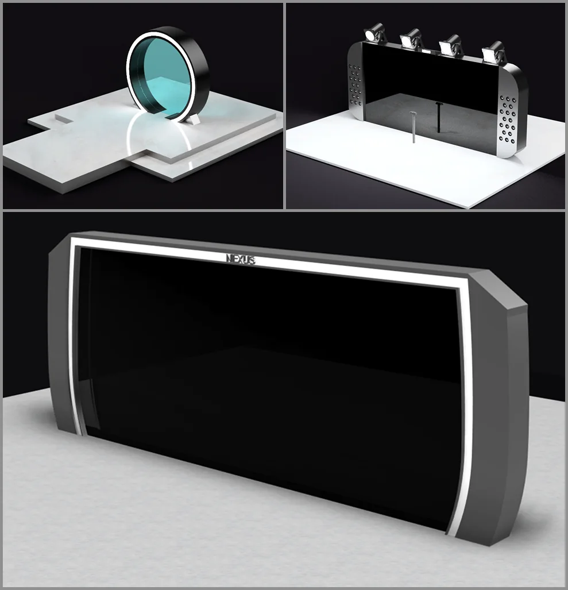
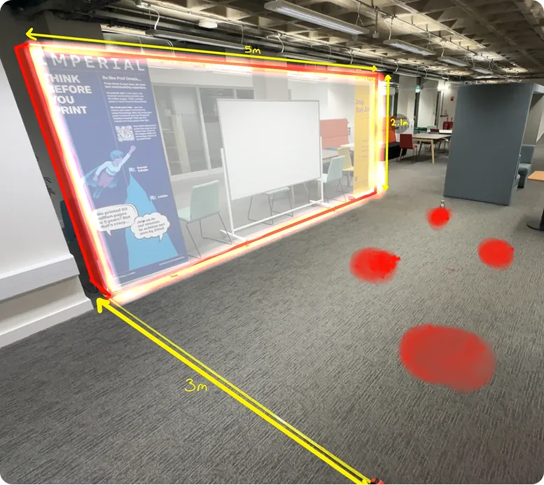
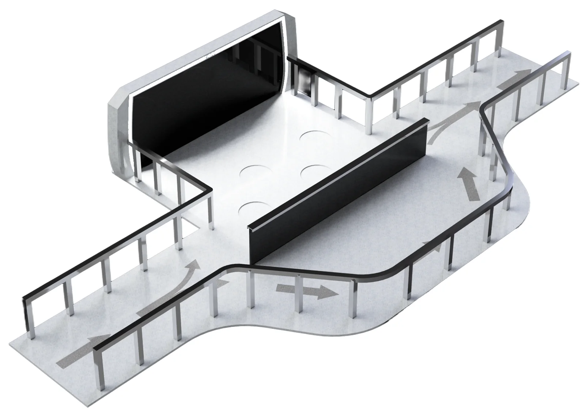
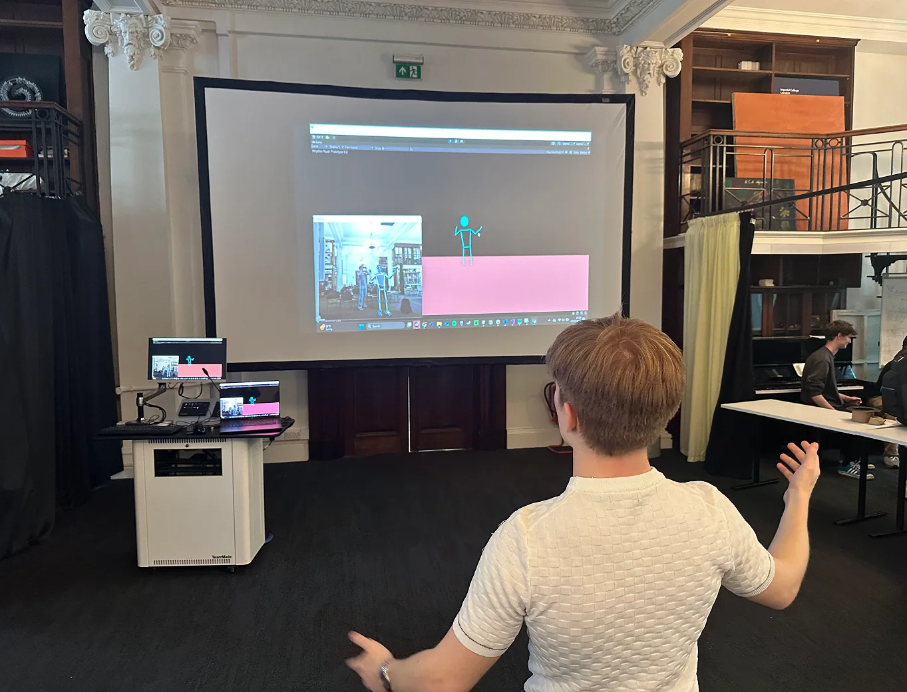
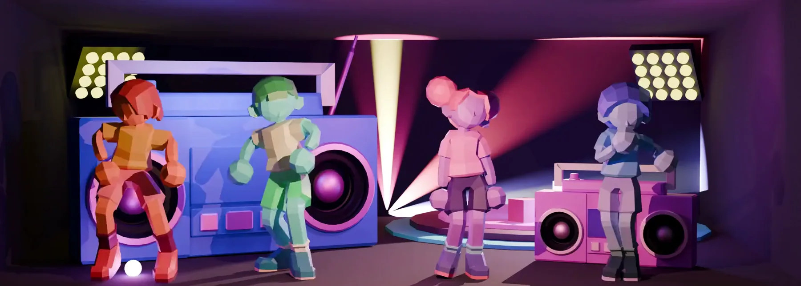

Rhythm Rush
A motion-tracked dance game for concert queues that gets strangers interacting through play instead of small talk. Up to four players step onto marked spots and appear as low-poly characters on a big screen, dancing along with an on-screen guide. Everyone else in the queue can watch, join in or carry on past without losing their place.


Research
We started at Outernet, an immersive space by Tottenham Court Road designed to get the public interacting. Visitors stayed an average of 41 seconds, nearly half were on their phones, and nobody spoke to anyone new. Street interviews with 21 people explained why; most wanted to connect but worried about intruding or looking like "a weirdo".
So we tried giving them a reason. Outside Imperial's library, we set up a table where passers-by could high-five us or have a quick chat, then swapped the chat for a two-player game, and interactions doubled. People who wouldn't interrupt a conversation crowded around the game and started talking without being asked.
Follow-up interviews and a survey pointed us to concert queues. They're full of bored strangers who already share an interest

Solution
We tested three concepts with users. PrEmo emotion cards captured how each one would feel to come across in a queue, with friends and alone. And a Harris profile then scored the concepts on criteria like learnability and fit with the pace of a queue. Rhythm Rush scored highest, and its whole premise depends on tracking people's bodies reliably.
This is the body tracking we built for Rhythm Rush, which I've rebuilt to run on this site. MediaPipe places landmark points on your limbs and joins them into a skeleton that follows you in real time, which is how the game animated the characters and scored the dancers. I left out the characters and stage art to keep it lightweight, so what you see is just the tracking.
Gallery
My contributions
Research
- Desk research on queues and gamification
- Outernet observation study
- Street interviews with 21 people
- Social experiment outside Imperial’s library
- Insights, HMWs and solution statement
Concept selection
- Ideation of the three concepts
- Harris profile
- Concept decision
Co-design and user testing
- Stakeholder role-play
- Three low-fi UI concepts, narrowed to one
- Simulated queue test
- Full-scale sizing mock-up
- Junction and spectator zone layout
Body tracking
- Python prototype with MediaPipe
- Limits testing and model complexity
- Smoothing and split-screen tracking
- Camera setup and distance
- Browser version for this site
Team and delivery
- Report layout and writing
- Validation section
- Appendices
- Meeting minutes
- References
- Presentation
Special note
Amarie Fasoro, a member of our team, made all of the amazing Blender characters, the UI design and all of the game environment art.








